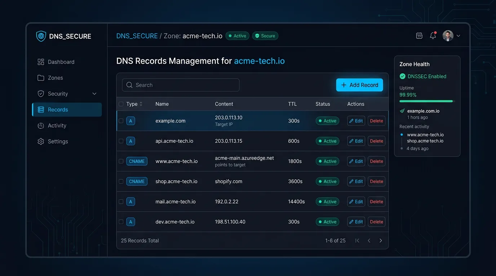
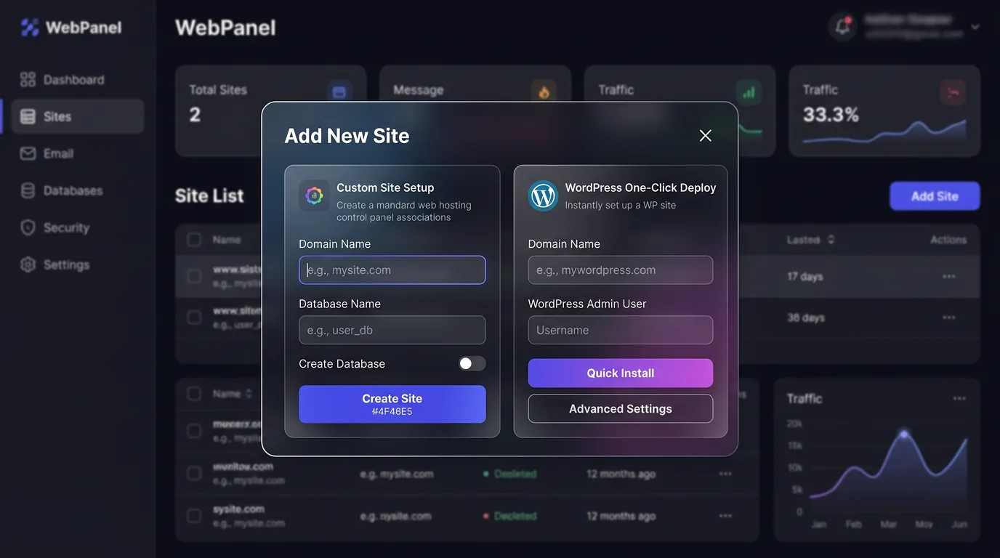
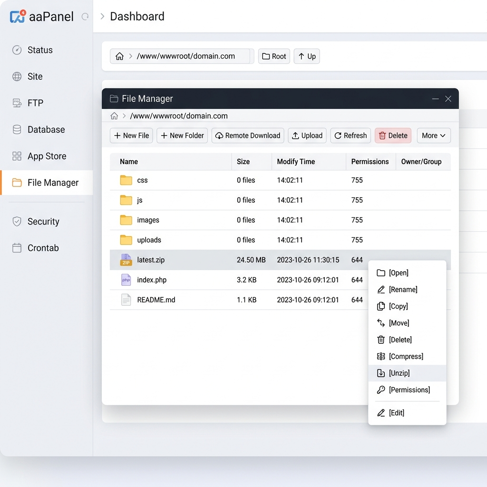
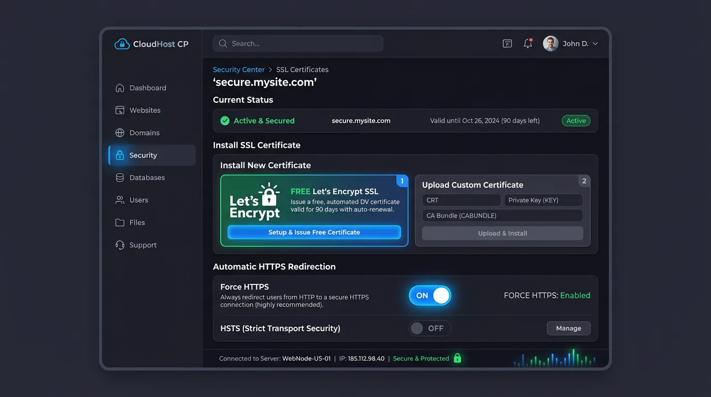

Sau khi bạn đã hoàn tất việc cài đặt aaPanel và môi trường Web Server (LNMP/LAMP) trên VPS, bước tiếp theo và cũng là bước quan trọng nhất chính là đưa website WordPress của bạn lên Internet. Việc cài WordPress trên VPS aaPanel có thể khiến nhiều người bỡ ngỡ lần đầu, đặc biệt là khi phải xử lý phân quyền file hay cấu hình bảo mật so với việc sử dụng Shared Hosting truyền thống.
Trong bài viết cực kỳ chi tiết này, TeamDevDesign sẽ hướng dẫn bạn toàn bộ quy trình chuẩn mực từ A–Z để cài WordPress trên VPS aaPanel thành công 100%. Chúng tôi sẽ phân tích cả 2 phương pháp: Cài đặt tự động 1 click (One-Click Deploy) và Cài đặt thủ công (Manual). Bên cạnh đó là các mẹo xử lý lỗi kinh điển (502 Bad Gateway, Error Database) và tối ưu Nginx để website chạy mượt mà nhất.
Trước khi khai báo website trên aaPanel, bạn bắt buộc phải chỉ cho tên miền biết máy chủ VPS của bạn nằm ở đâu trên Internet. Quá trình này gọi là Trỏ bản ghi DNS.
| Loại Bản ghi (Type) | Tên / Host (Name) | Giá trị (Value / Points to) | TTL |
|---|---|---|---|
| A | @ (Hoặc bỏ trống) |
IP_VPS_CUA_BAN |
Auto / 300s |
| A (hoặc CNAME) | www |
IP_VPS_CUA_BAN (Hoặc tên miền chính) |
Auto / 300s |
@ giúp người dùng gõ tenmien.com sẽ vào được web, còn bản ghi www giúp truy cập từ www.tenmien.com không bị lỗi.
Mẹo nhỏ: Để kiểm tra tên miền đã cập nhật IP mới chưa, bạn mở CMD (Windows) và gõ lệnh ping tenmien.com. Nếu trả về đúng IP của VPS là bạn đã thành công.
aaPanel có sẵn ứng dụng One-Click Deployment dành cho mã nguồn WordPress, giúp bạn bỏ qua các bước tải file, giải nén và tạo database bằng tay. Đây là phương pháp khuyên dùng để cài WordPress trên VPS aaPanel cho người mới.
One-click deployment (nếu chưa cài).
Tại đây, điền các thông số:
tenmien.com. Xuống dòng nhập thêm www.tenmien.com (Rất quan trọng để cấp SSL cho cả 2 nhánh).admin).Nhấn nút Submit. aaPanel sẽ tự động xử lý mọi thứ trong 20 giây. Bạn chỉ cần ra trình duyệt gõ tên miền là website đã hoạt động!
Đôi khi bạn muốn dùng bản WordPress cũ, hoặc đang dùng một bản Source Code WordPress bán hàng đóng gói sẵn. Lúc này việc cài WordPress trên VPS aaPanel bắt buộc phải dùng cách thủ công.
Vào Website -> Add Site. Tại tab Create Site, điền tên miền của bạn. Mục Database chọn MySQL. Mục PHP chọn 8.1. Bấm Submit. Lúc này một thư mục rỗng /www/wwwroot/tenmien.com và Database đã được tạo.
Vào menu Files, mở thư mục /www/wwwroot/tenmien.com, xóa sạch các file có sẵn (như index.html, 404.html).
Bấm nút Remote Download ở thanh menu trên cùng. Nhập đường link: https://wordpress.org/latest.zip (Bản tiếng Anh) hoặc https://vi.wordpress.org/latest-vi.zip (Bản tiếng Việt). VPS sẽ tải file zip này về trong 3 giây.

Click chuột phải vào file latest.zip, chọn Unzip. Chú ý: File sẽ giải nén ra một thư mục con tên là wordpress. Bạn phải vào thư mục con này, Select All, rồi Cut toàn bộ đưa ra ngoài thư mục gốc /www/wwwroot/tenmien.com.
Lưu ý về Permission (Quyền file): Toàn bộ file và thư mục WordPress phải thuộc sở hữu (Owner) của user www, thư mục mang quyền 755, file mang quyền 644. aaPanel thường tự động set quyền này, nhưng nếu bị lỗi, bạn có thể tick chọn tất cả file -> Permission -> Set thành Owner: www và 755.
Ra trình duyệt truy cập tên miền. Màn hình cài đặt WordPress quen thuộc sẽ hiện ra. Bạn nhập tên Database, User Database và Password đã lấy ở Bước 1 vào là xong.
Để WordPress hoạt động trơn tru trên aaPanel, bạn cần thực hiện 3 thao tác tối ưu sau đây:

Mặc định Nginx không hiểu định dạng Permalink (đường dẫn tĩnh) của WordPress, dẫn đến lỗi 404 khi xem bài viết.
Để upload Theme (Flatsome) hoặc file Backup lớn mà không bị lỗi upload_max_filesize:
100MB hoặc 500MB.max_execution_time từ 30 lên 300.Nguyên nhân: Khi cài thủ công, bạn đã nhập sai thông tin (Database Name, User, Password) vào file wp-config.php.
Cách khắc phục: Truy cập aaPanel -> menu Database. Kiểm tra xem tên User và Password có trùng khớp với file wp-config.php trong File Manager hay không. Nếu quên mật khẩu DB, bạn có thể nhấn đổi mật khẩu ngay trong bảng Database của aaPanel.
Nguyên nhân 1: Phiên bản PHP bị Crash. Khắc phục: Vào App Store -> PHP -> Restart lại dịch vụ PHP.
Nguyên nhân 2: VPS bị đầy RAM (Out of Memory - OOM) do cài MySQL 8.0 trên VPS 1GB RAM, hoặc do plugin quá nặng. Khắc phục: Kiểm tra biểu đồ CPU/RAM ở góc trái. Nếu RAM luôn >90%, hãy thiết lập Swap File trong plugin Linux Tools hoặc nâng cấp lên gói VPS 2GB RAM.
Nguyên nhân: Đây là lỗi sai quyền sở hữu file kinh điển. Thư mục WordPress đang thuộc quyền user root thay vì user www.
Cách khắc phục: Mở File Manager, click vào hộp kiểm chọn tất cả các file. Góc phải trên cùng nhấn nút Permission. Tại dòng Owner, đổi từ root thành www. Permission đặt là 755. Tick vào ô Sub-directories (áp dụng cho thư mục con) rồi nhấn OK.
Nginx là lựa chọn hoàn hảo nhất. Nginx quản lý RAM tốt hơn và phục vụ file tĩnh (ảnh, css, js) nhanh hơn Apache rất nhiều lần. Đặc biệt trên các VPS cấu hình yếu, Nginx chứng minh khả năng chịu tải (Concurrent Connections) vượt trội.
Vào menu Database, bạn sẽ thấy nút phpMyAdmin. Tuy nhiên, để truy cập được, bạn phải cài plugin phpMyAdmin trong App Store trước, đồng thời đảm bảo Port 888 (port mặc định của phpMyAdmin) đã được mở trên Firewall (Security) của VPS.
Mặc định là KHÔNG. Nhưng bạn có thể cấu hình tự động rất dễ dàng bằng cách vào menu Cron. Tại đây, chọn tính năng Backup Site và Backup Database, hẹn giờ chạy lúc 3h sáng mỗi ngày, lưu giữ 7 bản sao gần nhất. Bạn cũng có thể cài thêm app Google Drive từ App Store để đẩy backup thẳng lên cloud an toàn tuyệt đối.
Bạn dùng phần mềm SSH (PuTTY) login vào VPS quyền root. Gõ lệnh bt và nhấn Enter. Nhấn số 5 để tạo ngay mật khẩu mới vô cùng dễ dàng mà không ảnh hưởng gì tới website đang chạy.
Việc triển khai nền tảng VPS sử dụng aaPanel đem lại hiệu suất vượt trội, tốc độ load nhanh chuẩn mực và khả năng tùy biến sâu mà Shared Hosting không bao giờ có được. Bằng việc thực hiện đúng quy trình cài WordPress trên VPS aaPanel từ A-Z và tối ưu hóa hệ thống mà chúng tôi vừa hướng dẫn, bạn đã xây dựng thành công một pháo đài website vững chắc.
Nếu bạn là chủ doanh nghiệp không có đội ngũ IT hỗ trợ, hãy tham khảo dịch vụ Bảo trì & Quản trị Website chuyên nghiệp của TeamDevDesign. Chúng tôi luôn sẵn sàng túc trực 24/7 để giám sát, sao lưu và bảo vệ hệ thống của bạn trước mọi rủi ro.